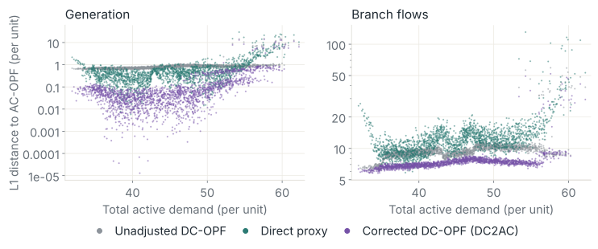
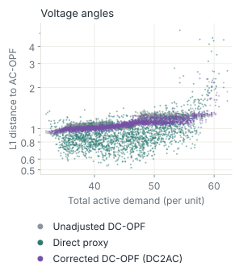

01 · Retained modelCorrect the model that computes the decision
Detailed models are often too costly to solve at every decision, so a simplified model computes the decision instead. Its decisions may not be implementable on the actual system, and the costs it plans differ from those the system incurs (Rosemberg et al., 2022). Learning can enter this arrangement in two places. A direct map \(\hat{\mathbf y}=\hat g_{\omega'}(w)\) replaces the solve and is fit to reference decisions \(\mathbf y^{\mathrm{ref}}(w)\) of the detailed model, as optimization proxies do (Kotary et al., 2021; Chen et al., 2022). A correction instead keeps the simplified model and learns its parameters as a function of the context \(w\):
Here \(p\) contains the retained model's coefficients, \(\mathcal Y(p;w)\) is its feasible set, \(f\) is its objective, and the coefficient map has weights \(\omega\), distinct from the direct map's weights \(\omega'\), since \(\boldsymbol\theta\) denotes voltage angles here. The decision is the selected solution \(\mathbf y^\star\) of the retained model, and it may be judged against the same reference \(\mathbf y^{\mathrm{ref}}(w)\), as a supervised proxy is.

Retaining the solve has three consequences. Every decision is a solution of the retained model, so the constraints of that model hold exactly, whereas a direct map typically carries no guarantee of feasibility or optimality, particularly outside its training distribution. The network learns only how the retained model must change to reproduce the detailed decisions, while a direct map must also learn to solve the problem. The learned quantities keep the meaning they have in the model, so each corrected coefficient can be read, and bounded, as the physical quantity it represents.
Correcting simplified models has a long history in network equivalents (Ward, 1949), recently with data-driven nonlinear load functions (Ribeiro et al., 2023). Parameter optimization can fit one set of coefficients of a linear model over a range of operating conditions (Taheri and Molzahn, 2026). A coefficient map instead adapts the coefficients to the inputs of each decision, such as the uncertain demand or the system state. The best coefficients for each instance can also be computed exactly, by solving a bilevel problem per instance and then fitting a network to the results; the per-instance bilevel solves limit that approach in scale (Constante-Flores et al., 2024).
02 · TrainingThe gradient passes through the retained solution
With reference decisions computed in advance, the coefficient map is trained by minimizing the expected reference-decision loss through the retained solve:
Here \(\mathbb P_w\) is the context distribution used for training; the problem is bilevel, and the outer loss \(L\) differs from the inner objective \(f\). The envelope theorem therefore does not supply the gradient, and the multipliers of the retained model alone do not give the training gradient. The gradient follows the response of the solution itself:
Here \(D\) denotes a Jacobian, and \(\nabla_{\mathbf y}L\) is evaluated at \(\mathbf y^\star(p;w)\) with the reference fixed; at a regular solution (for the linear DC-OPF used here, a nondegenerate optimum with unique primal and dual solutions and strict complementarity), the solution response follows from the implicit function theorem applied to the retained model's KKT conditions, with one adjoint solve per sample at the converged solution (Fiacco, 1976). Differentiable optimization layers supply it for convex programs (Amos and Kolter, 2017; Agrawal et al., 2019), and DiffOpt.jl for models written in JuMP (Besançon et al., 2024; Rosemberg et al., 2025a). Differentiating Optimization Models develops the calculation and its failure modes.
A linear retained model still supplies a usable signal. The loss depends only on the decisions, which move with the coefficients within each active set, and training averages their sensitivities over many sampled contexts. A loss on prices behaves differently: The prices of a linear market clearing are multipliers, piecewise constant in the offers, so their sensitivities vanish almost everywhere (Endogenous Response).
The related decision-focused learning construction is discussed in Differentiating Optimization Models. In model correction the predicted quantities are the coefficients of the model that stands in for a detailed one, and the target is the detailed model's decision. The detailed model is solved once per sample before training, and the retained model is solved inside every forward pass.
03 · Network instanceA linear network model corrected against AC power flow
Optimal power flow selects the least-cost generation that serves demand under network physics and operating limits (Carpentier, 1962). Its AC form is nonconvex, and system operators often use the DC approximation instead (O'Neill et al., 2011). DC-OPF assumes unit voltage magnitudes, small angle differences, and negligible losses, and omits reactive power (Molzahn and Hiskens, 2019). It is a linear program, and its dispatch differs from that of AC-OPF.
DC2AC retains DC-OPF and lets the active demand \(w=\mathbf p^{\mathrm d}\) select two of its coefficient vectors through \((\tilde{\mathbf g}^{\mathrm s},\tilde{\mathbf b})=\phi_\omega(\mathbf p^{\mathrm d})\): the nodal shunt conductances and the branch susceptances. DC-OPF minimizes generation cost plus a penalty \(c_\varsigma\) on load shedding \(\varsigma_i\), over generation \(\tilde{\mathbf p}^{\mathrm g}\), branch flows \(\tilde{\mathbf p}^{\mathrm f}\), and voltage angles \(\tilde{\boldsymbol\theta}\). Let \(\mathcal N\) and \(\mathcal E\) be the buses and branches, \(\mathcal G_i\) and \(\mathcal L_i\) the generators and loads at bus \(i\), and \(\mathcal E_i\) and \(\mathcal E^R_i\) its outgoing and incoming branches. With \(\tilde b_e<0\) denoting series susceptance as in PGLib, the corrected balance and flow equations accompany the operating limits and reference angle:
Here \(\mathcal G\) is the set of all generators, underlines and overlines on generation and angle differences denote their lower and upper limits, \(\overline S_e\) is the branch thermal limit, and \(\mathrm{ref}\) identifies the reference bus. The shunt term lets the linear balance account for losses, and the susceptances account for variations in effective line impedance; the standard model neglects both. In the notation of the object, \(p=(\tilde{\mathbf g}^{\mathrm s},\tilde{\mathbf b})\), the induced decision is \(\mathbf y^\star=(\tilde{\mathbf p}^{\mathrm g},\tilde{\mathbf p}^{\mathrm f},\tilde{\boldsymbol\theta})\), and the reference \(\mathbf y^{\mathrm{ref}}=(\mathbf p^{\mathrm g},\mathbf p^{\mathrm f},\boldsymbol\theta)\) is the AC-OPF solution computed by Ipopt. The training loss is the squared error between the two.

A two-sided softplus keeps each predicted coefficient within physical bounds. DC-OPF is solved by HiGHS and differentiated by DiffOpt.jl through its JuMP model.
04 · Induced accuracyGeneration and flows closer to AC than both baselines
The study uses the 89-bus PEGASE system (Fliscounakis et al., 2013), with 35 loads, 12 generators, and 210 branches. Ten thousand demand profiles are generated with PGLearn (Klamkin et al., 2025) by scaling all loads with a common factor drawn uniformly between 70% and 110% of nominal and perturbing each load by up to ±15%; 80% of the profiles train and 20% validate. The correction is compared with the unadjusted DC-OPF and a direct proxy with the same architecture and the same initialization, trained on the AC solutions. Accuracy is the L1 distance between each method's generation, flows, and angles and the AC-OPF solution.
On the validation set, the corrected model has the lowest generation error of the three methods on 95% of samples and the lowest branch-flow error on 97%. Its mean generation error is 0.22 per unit, against 0.90 for the unadjusted DC-OPF and 0.74 for the proxy; for branch flows the means are 7.57, 9.72, and 12.83. In the middle of the demand range it reproduces the AC generation almost exactly, with errors as low as \(10^{-5}\). From the same initialization as the proxy, its training loss converged mostly within the first two epochs.

05 · ScopeWhat the correction does not recover
Voltage angles are the exception. The correction has the lowest angle error on only 13% of samples, and its mean (1.08) barely improves on the unadjusted model (1.12), while the direct proxy is the most accurate (0.95). The DC-OPF used here omits reactive power (Klamkin et al., 2025). With any coefficients, its output remains a DC-OPF solution, and the paper attributes the angle gap, as a hypothesis, to the active–reactive coupling that such a solution cannot represent.

All three methods struggle at high load, where the system is congested. There the unadjusted DC-OPF often outperforms the proxy, and the correction typically improves only slightly on DC-OPF, so its advantage narrows.
The study covers one network under demand perturbations at fixed topology. Accuracy is measured as distance to the AC reference decisions; the AC feasibility and the operating cost of the corrected dispatch were not evaluated. The construction itself does not require a linear retained model. Any differentiable simplified formulation can take the place of DC-OPF, such as an AC-OPF model on a reduced network, and the paper proposes other approximations of AC-OPF to address the angle gap.
06 · Policy compositionWhere a corrected model sits in a decision process
A calibrated simplified model is a decision engine with its own objective. It can replace the detailed recourse problem during policy training, and possibly at execution, so that policies are evaluated and their decisions computed faster. The stage problems of the state-target policies in Policies for Multistage Decisions are such recourse problems.
When the retained model is the internal model of a controller that acts repeatedly, the construction is to learn its coefficients through the controller's response at regular local solutions, with the loss replaced by the realized closed-loop cost and constraint violations; Differentiating Optimization Models develops that construction.
The alternative to retaining the model is to approximate its solution map directly. Learning Solution Maps develops that choice, including the case in which the learned map must also reproduce the local response of the solver because it is differentiated through. Planning on a simplified network and operating on the detailed one changes resource valuations and implemented costs (Rosemberg et al., 2022); Planning and Realization Mismatch treats that gap at the level of policies.
Software
DiffOpt.jl supplies the derivatives of the DC-OPF solution with respect to the predicted coefficients, through the JuMP model, inside the training loop.
DiffOpt.jl
Solution and optimal-value derivatives of JuMP models with respect to named parameters, through the model's reformulations, for convex and smooth nonconvex programs.
References
- A. Agrawal, B. Amos, S. Barratt, S. Boyd, S. Diamond, J. Z. Kolter. Differentiable convex optimization layers. Advances in Neural Information Processing Systems 32, 2019.
- B. Amos, J. Z. Kolter. OptNet: Differentiable optimization as a layer in neural networks. International Conference on Machine Learning, 136–145, 2017.
- M. Besançon, J. Dias Garcia, B. Legat, A. Sharma. Flexible differentiable optimization via model transformations. INFORMS Journal on Computing 36(2):456–478, 2024.
- J. Carpentier. Contribution to the economic dispatch problem. Bulletin de la Société Française des Électriciens 3(8):431–447, 1962.
- W. Chen, S. Park, M. Tanneau, P. Van Hentenryck. Learning optimization proxies for large-scale security-constrained economic dispatch. Electric Power Systems Research 213:108566, 2022.
- G. E. Constante-Flores, A. H. Quisaguano, A. J. Conejo, C. Li. AC-network-informed DC optimal power flow for electricity markets. Preprint arXiv:2410.18413, 2024.
- A. V. Fiacco. Sensitivity analysis for nonlinear programming using penalty methods. Mathematical Programming 10(1):287–311, 1976.
- S. Fliscounakis, P. Panciatici, F. Capitanescu, L. Wehenkel. Contingency ranking with respect to overloads in very large power systems taking into account uncertainty, preventive, and corrective actions. IEEE Transactions on Power Systems 28(4):4909–4917, 2013.
- M. Klamkin, M. Tanneau, P. Van Hentenryck. PGLearn: An open-source learning toolkit for optimal power flow. Preprint arXiv:2505.22825, 2025.
- J. Kotary, F. Fioretto, P. Van Hentenryck, B. Wilder. End-to-end constrained optimization learning: A survey. Proceedings of the Thirtieth International Joint Conference on Artificial Intelligence, 4475–4482, 2021.
- D. K. Molzahn, I. A. Hiskens. A survey of relaxations and approximations of the power flow equations. Foundations and Trends in Electric Energy Systems 4(1–2):1–221, 2019.
- R. P. O'Neill, T. Dautel, E. Krall. Recent ISO software enhancements and future software and modeling plans. Federal Energy Regulatory Commission, technical report, 2011.
- R. Ribeiro, A. Street, F. Mancilla-David, A. Angulo. Equivalent reduced DC network models with nonlinear load functions: A data-driven approach. IEEE Transactions on Power Systems 39(2):3021–3032, 2023.
- B. Taheri, D. K. Molzahn. Improving the accuracy of DC optimal power flow formulations via parameter optimization. IEEE Transactions on Power Systems 41(3):2373–2385, 2026.
- J. B. Ward. Equivalent Circuits in Power System Studies. Purdue University, 1949.
- A. W. Rosemberg, A. Street, J. Dias Garcia, D. M. Valladão, T. Silva, O. Dowson. Assessing the cost of network simplifications in long-term hydrothermal dispatch planning models. IEEE Transactions on Sustainable Energy 13(1):196–206, 2022. DOI 10.1109/TSTE.2021.3106810.
- A. Rosemberg, M. Klamkin, P. Van Hentenryck. Differentiable optimization for deep learning-enhanced DC approximation of AC optimal power flow. NeurIPS 2025 Workshop MLxOR; arXiv:2504.01970, 2025b.
- A. W. Rosemberg, J. Dias Garcia, F. Pacaud, R. B. Parker, B. Legat, K. Sundar, R. Bent, P. Van Hentenryck. A general and streamlined differentiable optimization framework. Preprint arXiv:2510.25986, 2025a.
Publication
Differentiable Optimization for Deep Learning-Enhanced DC Approximation of AC Optimal Power Flow
arXiv OpenReviewBibTeX
@misc{rosemberg2025dc2ac, title = {Differentiable Optimization for Deep Learning-Enhanced {DC} Approximation of {AC} Optimal Power Flow}, author = {Rosemberg, Andrew and Klamkin, Michael and Van Hentenryck, Pascal}, year = {2025}, eprint = {2504.01970}, archivePrefix = {arXiv}, primaryClass = {math.OC}, note = {NeurIPS 2025 Workshop MLxOR} }